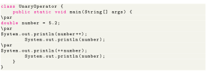

Next: Equality and Relational Operators Up: Unary Operators Previous: Increment and Decrement Operator Contents

The output for the above code will be as below

Here, notice the line, ; When this statement is executed, the original value is evaluated first. Then the number is increased. This is the reason you are getting 5.2 as an output. Now, when the line, will print the increased value. That is 6.2. However, the line, will increase the number by 1 first and then the statement is executed. Hence the output is 7.2. Similar is the case for decrement – operator.